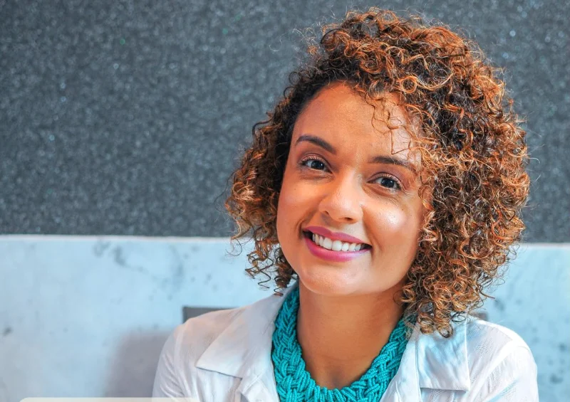

Sou a Fernanda Melo, nutricionista clínica em Natal. Cuido de quem tem resistência à insulina, pré-diabetes e diabetes com uma consulta longa, escuta de verdade e um plano feito com a comida que você já come.
fm O que você vive influencia o que você come. Por isso a sua rotina entra na consulta.
Para quem recebeu um alerta no exame e não quer viver de proibição.
Cuidar da glicemia vai além do que você coloca no prato. Sono, estresse, trabalho e prazer também contam.
Meu foco principal
Resistência à insulina
É quando o corpo precisa de cada vez mais insulina para controlar o açúcar no sangue. Costuma não dar sintoma, e é a fase em que a alimentação mais ajuda. A gente monta um plano para você agir agora, com calma e sem cortar tudo.

"Minha consulta não começa no prato. Começa na escuta."
Glicemia de jejum alterada
Pré-diabetes
O exame acendeu a luz amarela. Você sai da consulta sabendo o que mudar primeiro, e com um plano que dá para seguir em semana corrida.
Junto com o seu médico
Diabetes tipo 2
Alimentação pensada junto com o seu tratamento, os seus horários e os remédios que você já usa.
Você se reconhece em algum destes?
Já tentou dieta da moda e desistiu na segunda semana.
Sente que agora tudo o que gosta virou proibido.
Come fora, trabalha muito e não tem tempo de cozinhar.
Tem medo de o pré-diabetes virar diabetes.
Como é a consulta no Método CICLO
Ciência com escuta, nutrição com autonomia. Cinco coisas que você precisa saber antes de marcar.
1
A consulta pode passar de uma hora.
E não é à toa. Esse tempo é para te conhecer de verdade: sua história, sua rotina, seus medos e seus objetivos. Cuidar bem exige presença, não pressa.
2
Eu não olho só o prato. Olho você por inteiro.
Corpo, mente, emoções, vida social e rotina fazem parte da conversa, porque o que você vive influencia o que você come e como se cuida.
3
Você não sai com um plano que não caiba na sua vida.
Prescrevo alimentos do seu hábito, respeitando sua cultura, seu prazer e sua rotina. Também te ensino algo novo, sem te afastar de quem você é.
4
Aqui não tem modismo.
Nutrição clínica é tratamento feito com alimentos, suplementos quando necessário, e muita ciência. Sou sincera no que precisa ser dito, sempre com acolhimento e respeito.
5
Cada paciente é único. O plano também.
O tratamento nunca é igual para todos, porque o plano terapêutico é individual.
E não estranhe se eu te receber com um abraço logo na primeira consulta.
O que muda quando a consulta é feita para você
60min
ou mais na primeira consulta, para entender a sua rotina antes de falar de comida.
5,0
de nota no Google, dada por quem já passou pelo consultório.
63
avaliações de pacientes e familiares.
Comida de verdade, da sua cidade
Cuscuz, tapioca e feijão continuam na mesa. O plano parte do que você já come.
Plano que cabe na semana corrida
Pensado para os seus horários, almoço fora e fim de semana com a família.
Explicação clara, sem termo difícil
Você entende o porquê de cada escolha e ganha autonomia para decidir sozinho.
Trabalho junto com o seu médico
A alimentação conversa com o seu tratamento e com os seus exames.
Vozes do CICLO
5,0
63 avaliações no Google
Ao iniciar o processo, eu me sentia perdido e com dúvidas sobre como adaptar meus hábitos. A Dra. Fernanda me deu um acompanhamento individualizado, explicando de forma clara a importância de cada alimento para o tratamento.
Gustavo SilveiraAcompanhamento para resistência à insulina
A Fernanda procurou adaptar a dieta à realidade dos meus pais, simplificando o processo para que eles pudessem seguir o plano alimentar da forma mais prática possível.
Priscila FariasFilha de pacientes, avaliação no Google
Raquel chegou ao CICLO com uma rotina intensa de trabalho e estudos. Antes de falar de balança, a gente olhou para a vida dela. Cuidar da saúde transformou muito mais do que um número.
Raquel BarraHistória contada pela Fernanda
Fui tratar meu diabetes e ela olhou para várias coisas que eu precisava melhorar. Mudou muito a minha vida.
Ana Celia PaivaAvaliação no Google
Atendimento diferenciado e humano, pensando sempre no melhor para o paciente.
Fernandes AraújoAvaliação no Google
Para mim, nutrição nunca foi só sobre comida.
É sobre cuidado, presença, escuta e transformação. Hoje eu me dedico a quem convive com resistência à insulina e diabetes, ajudando cada pessoa a construir uma vida mais saudável, possível e sustentável.
antesMarinha do Brasil
Entrei para a Marinha e fiz parte do Pelotão Extraordinário, uma turma escolhida pela sua diversidade. Levo de lá a disciplina e o cuidado com as pessoas.
depoisNutrição clínica
Escolhi viver uma nova fase: traduzir ciência em cuidado real, com consultas mais próximas e sem pressa.
hojeMétodo CICLO
Um jeito de cuidar em que alimentação, corpo, mente e vida caminham juntos.